Caitlin Hughes is one of the UK's leading harp students,
helping find & perform the perfect music for your event
Currently based in Leeds, I am available for events nearby
- Caitlin is currently reading Music, as an undergraduate, at the University of Leeds.
-  Caitlin studied harp at the Royal Academy of Music from 2018 to 2022, regularly performing with their Junior Academy.
- Caitlin studied harp & violin at the Royal Birmingham Conservatoire from 2015 to 2018, regularly performing with their Junior Symphony Orchestra.
-
 Caitlin has performed alongside the Orchestra of the Swan, for some of their Warwick-based concerts.
Caitlin has performed alongside the Orchestra of the Swan, for some of their Warwick-based concerts.
- Caitlin has performed professionally with Leamington Sinfonia, after a number of years as an amateur.
- Caitlin performed, on the harp, with the National Children's Orchestra in 2017, 2018 & 2019.